| slowfamily 앨범 1 (2004년 이전) | |
 |
Photo
Gallery 2001
8월 백일 이후 뜨거운 아이의 여름나기... |
| 대전 할아버지와. |
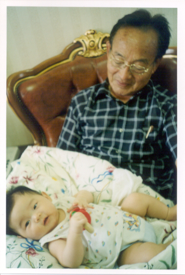 |
| 할머니
할아버지, 저 허수아비 같죠? |
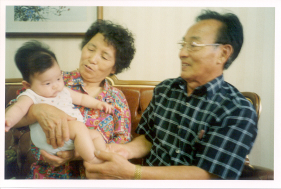 |
| 으히히, 할머니 겨드랑이 간지러워요 |
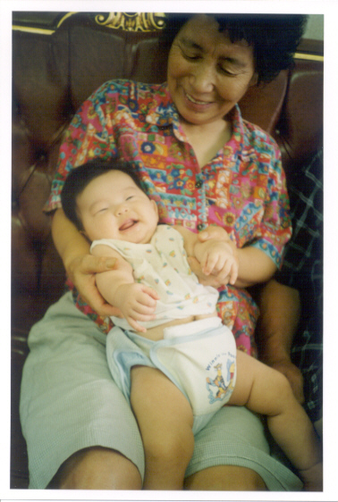 |
| 8월11일 수진이와 함께 |
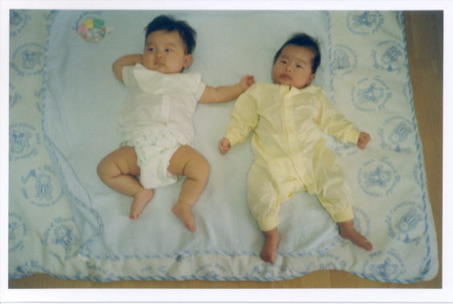 |
|
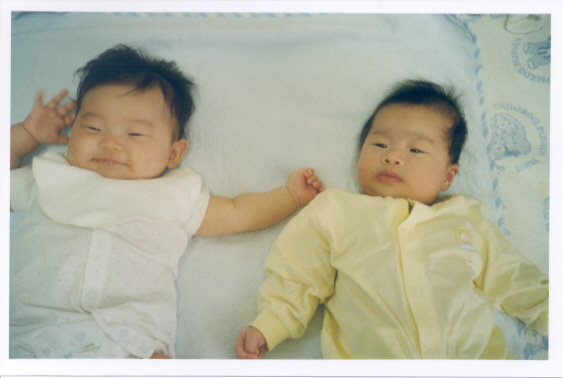 |
|
서연이
"내 포즈 어때요?" |
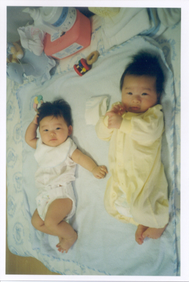 |
| 터치 |
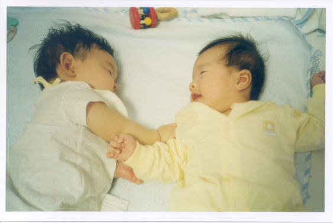 |
| 두
아기와 두 엄마 서연아 수진이네 유진 고모란다. |
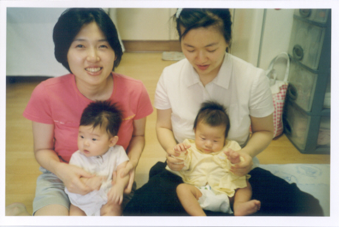 |
|
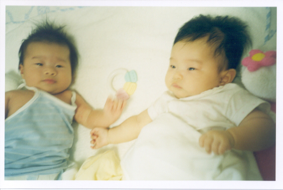 |
|
|
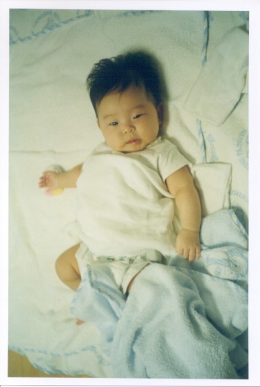 |
|
| 815
광복절 아빠 회사 옆 선릉공원에 가다 "멋진 나무들" |
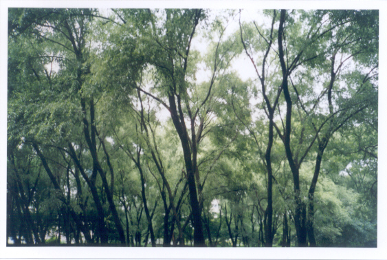 |
| 얼마나 편한지 몰라요 ^^ |
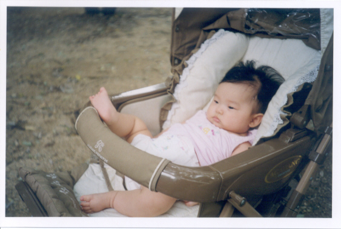 |
| 하늘 바라보기 |
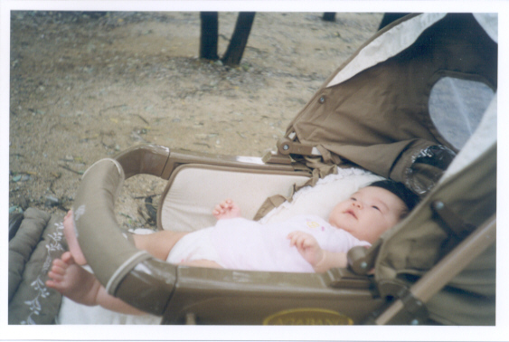 |
| to be continued. | |
Last updated: 2001년 10월 27일
©2001 정승훈
& 유경민
가족. All rights reserved.
www.slow.co.kr